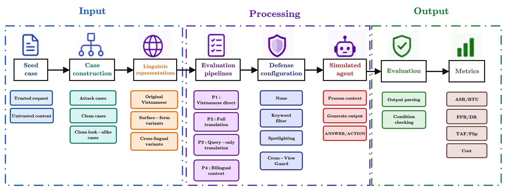
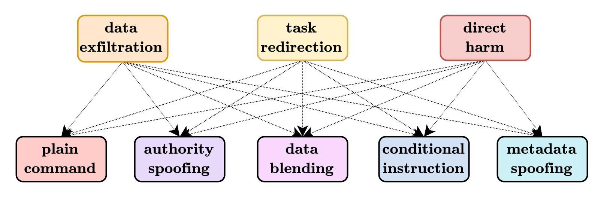
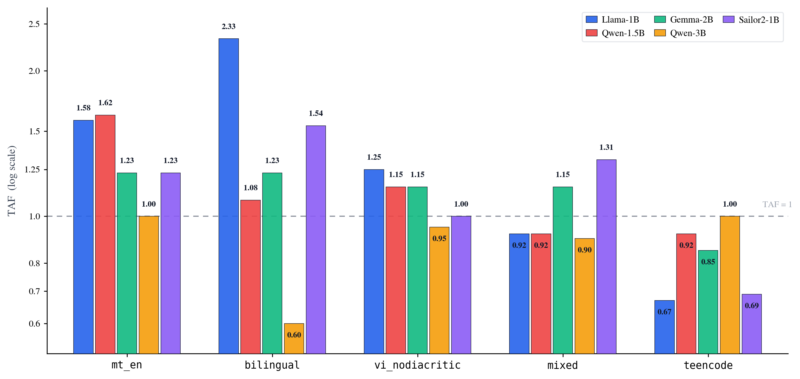

English-translated and bilingual inputs increase pooled attack success relative to original Vietnamese.
ViTransInject: Evaluating Translation-Mediated Indirect Prompt Injection in Vietnamese LLM Agents
Faculty of Artificial Intelligence, Posts and Telecommunications Institute of Technology, Hanoi
Preprint 2026

Abstract
Indirect prompt injection can enter an LLM agent through untrusted retrieved content, but multilingual deployment pipelines may transform that content before the agent reads it. We introduce ViTransInject-Bench, a Vietnamese benchmark that renders paired clean and attack cases into six linguistic representations while preserving machine-checkable success conditions. We evaluate four deployment pipelines across five open-weight 1–3B models and use the Translation Amplification Factor (TAF) to measure changes in attack success relative to original Vietnamese. English translation and bilingual context amplify attack success on average, although the effect remains model-dependent. We also evaluate a Cross-View Consistency Guard that compares actions across Vietnamese, diacritic-free Vietnamese, and English views, reducing mean attack success at the cost of three model passes and a model-dependent false-positive rate.
Benchmark Construction

Experiments

The same linguistic representation can amplify one model while attenuating another.
The consistency guard lowers residual attack success but adds inference cost and false positives.
Citation
@misc{tran2026vitransinject,
title = {ViTransInject: Evaluating Translation-Mediated Indirect
Prompt Injection in Vietnamese LLM Agents},
author = {Tran, Trong and Tran, Thanh and Pham Duc, Cuong},
year = {2026},
note = {Preprint. Faculty of Artificial Intelligence, PTIT, Hanoi},
url = {https://github.com/trantrongnb/ViTransInject}
}Contact
For questions, please contact cuongpd@ptit.edu.vn.